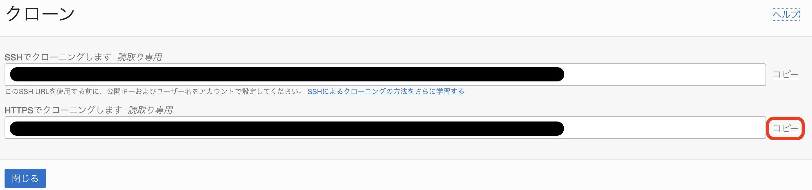
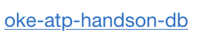
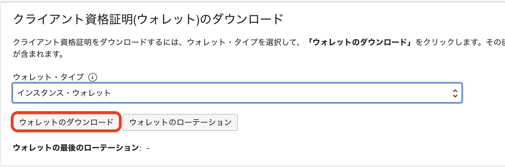

KubernetesでサンプルアプリケーションのデプロイとCI/CDを体験してみよう
このワークショップでは、OCI DevOpsを利用してCI/CDパイプラインをセットアップし、Oracle Autonomous Transaction ProcessingをデータソースとしたJavaアプリケーションをOracle Container Engine for Kubernetes（OKE）にデプロイする一連の流れを体験することができます。
このワークショップには以下のサービスが含まれます。
- Oracle Container Engine for Kubernetes（略称：OKE）: : マネージドなKuberentesクラスタを提供するクラウドサービスです。
- Oracle Autonomous Transaction Processing（略称：ATP）: : 運用がすべて自動化された自律型データベースサービスです。
- Oracle Cloud Infrastructure DevOps（略称：OCI DevOps）: : Oracle Cloudが提供するマネージドなCI/CDサービスです。
- Oracle Cloud Infrastructure Registry（略称：OCIR）: : フルマネージドなDocker v2標準対応のコンテナレジストリを提供するサービスです。
- Oracle Cloud Infrastructure Artifact Registry: : フルマネージドな非コンテナイメージの成果物を格納できるレポジトリサービスです。
ワークショップを開始する前に以下を準備してください。
-
OKEハンズオン事前準備を実施済みであること
Oracle Cloud Infrastructureの基本操作はチュートリアル : OCIコンソールにアクセスして基本を理解するをご確認ください。
はじめに、手順を最後まで実施したときにどのような環境が作られるか確認して、ゴールの全体像を掴んでおきましょう。
手順を最後まで行うと、下図のような環境が構成されます。

| 構成要素 | 説明 |
|---|---|
| OKE | アプリケーションのコンテナが稼働するクラスター本体です。OKEをプロビジョニングすると、Oracle Cloudの各種IaaS上に自動的に構成されます。 |
| OCI DevOps | OKE Clusterに対してアプリケーションのデプロイ(CI/CD)を実施するサービスです。 |
| Autonomous Transaction Processing | 今回デプロイするサンプルアプリケーションが利用するデータベースです。 |
| OCIR/Artifact Registry | コンテナイメージなどのビルド成果物およびマニフェストなどを保存するレポジトリです。 |
この全体像のうち、OKEに関しては、すでにOKEハンズオン事前準備で構築済みとなります。
ここでは、後続の手順で利用するトークンやリソースの準備を行います。
準備する項目は以下の6つです。
| 項目 | 説明 |
|---|---|
| ハンズオン資材 | 本ハンズオンで利用するサンプルアプリケーションやスクリプトが含まれたプロジェクトです。Cloud Shell上にpullします。 |
| ユーザ名 | OCIのリソース操作に必要なユーザ名です。今回は、OCI DevOpsのGit Repositoryへのアクセスに利用します。 |
| 認証トークン | OCIのリソース操作に必要なトークンです。今回は、OCI DevOpsのGit Repositoryへのアクセスに利用します。 |
| オブジェクト・ストレージ・ネームスペース | OCIRへのアクセスやOCI DevOpsのGit Repositoryへのアクセスに必要な情報です。 |
| コンパートメントOCID | ATPをプロビジョニングする際に利用する情報です。 |
| OCIRレポジトリ | 今回のサンプルアプリケーションのコンテナイメージを格納するためのOCIR上のレポジトリです。今回は事前準備としてパブリックなレポジトリを作成します。 |
OCIRレポジトリについては、ゴールを確認するで示した図でいうと、赤点線枠( )の部分を作成していきます。
)の部分を作成していきます。

まずは、今回のハンズオンで利用する資材をGitHubから取得します。
Cloud Shellを起動し、git cloneを実行します。
git clone https://github.com/oracle-japan/oke-atp-helidon-handson.git
これで資材の取得は完了です。
ホームディレクトリに戻っておきます。
cd ~
ここでは、ユーザ名の確認を行います。
OCIコンソール画面右上の人型のアイコンをクリックし、展開したプロファイルに表示されているユーザ名をエディタなどに記録しておきます。

これでユーザ名の確認は完了です。
ここでは、OCI DevOpsのレポジトリ操作に必要な認証トークンを取得します。
OCIコンソール画面右上の人型のアイコンをクリックし、展開したプロファイルからユーザ名をクリックします。

下にスクロールして「リソース」の「認証トークン」に移動し、「トークンの生成」ボタンをクリックします。

 をクリックします。
をクリックします。
以下の項目を入力します。
| key | value |
|---|---|
| 説明 | oke handson |

をクリックします。

表示されたトークンをコピーして、エディタなどに記録しておきます。
受講者の方へ生成されたトークンは一回のみ表示されます。 「コピー」をクリックしてトークンがコピーされ、どこに保存してください。完了したら、「閉じる」ボタンをクリックします。（注：忘れたときは作成されたトークンを削除して、再度生成してください。）
ここでは、OCIコードレポジトリへのアクセスおよびOCIRへコンテナイメージをプッシュする際に必要となるテナンシ名とオブジェクト・ストレージ・ネームスペースを確認します。
OCIコンソール画面右上の人型のアイコンをクリックし、テナンシ名をクリックします。

2つの赤枠部分の値をコピーして、エディタなどに保存しておきます。
上の赤枠がテナンシ名(名前)、下の赤枠がオブジェクト・ストレージ・ネームスペース(オブジェクト・ストレージ・ネームスペース)になります。

以上で、テナンシ名とオブジェクト・ストレージ・ネームスペースの確認は完了です。
ここでは、ATPをプロビジョニングする際に利用するコンパートメントOCIDの確認を行います。
CIコンソールのハンバーガメニューより、「アイデンティティとセキュリティ」メニューの「コンパートメント」をクリックします。

ご自身のコンパートメントが表示されているので、クリックします。

ハンズオンに利用するコンパートメントついてトライアル環境でのハンズオンの場合は、ルートコンパートメントを利用します。(コンパートメントの語尾に(ルート)と付与されています) それ以外の環境でご自身に割り当てられているコンパートメントがある場合は、そちらのコンパートメントをご確認ください。
「コンパートメント情報」内にある赤枠部分の値をコピーして、エディタなどに保存しておきます。

以上で、コンパートメントOCIDの確認は完了です。
ここでは、ビルドしたコンテナイメージをプッシュするためのレポジトリをOCIRに作成します。
OCIコンソールのハンバーガメニューより、「開発者サービス」の「コンテナ・レジストリ」をクリックします。

ハンズオンに利用するコンパートメントついてトライアル環境でのハンズオンの場合は、ルートコンパートメントを利用します。
OCIRのコンソール画面はデフォルトでルートコンパートメントが選択されますが、ご自身に割り当てられているコンパートメントがある場合は、そちらのコンパートメントを利用してください。
コンパートメントはOCIRのコンソール画面の左側から選択できます。

 をクリックします。
をクリックします。
以下の項目を入力します。
| key | value |
|---|---|
| リポジトリ名 | handson |
| アクセス | パブリックを選択 |
レポジトリ名についてOCIRのレポジトリ名はテナンシで一意になります。 集合ハンズオンなど複数人で同一環境を共有されている皆様は、handson01やhandson-tnなどの名前のイニシャルを付与し、名前が重複しないようにしてください。

 をクリックします。
をクリックします。
以上で、事前準備は完了です。
ここでは、OCI DevOpsを利用するためのポリシーを作成します。
ポリシーについてOracle Cloud Infrastrctureにはポリシーという考え方があります。 ポリシーを利用すると、ユーザや動的グループがどのリソースやサービスでどのような操作を実行可能にするかを制御することができます。 ポリシーの詳細はこちらのページをご確認ください。
今回は、ポリシーの作成(動的グループを含む)をシェルスクリプトで簡略化していますが、以下の動的グループとポリシーが設定されます。
| 動的グループ | ルール | 説明 | | ———————— | ————————————————————————————————- | | OCI_DevOps_Dynamic_Group | instance.compartment.id = ‘コンパートメントOCID’,resource.compartment.id = ‘コンパートメントOCID’ | コンパートメント内の全てのリソースやインスタンスを含めた動的グループ |
コンパートメントについてOracle Cloud Infrastrctureにはコンパートメントという考え方があります。 コンパートメントは、クラウド・リソース(インスタンス、仮想クラウド・ネットワーク、ブロック・ボリュームなど)を分類整理する論理的な区画で、この単位でアクセス制御を行うことができます。また、OCIコンソール上に表示されるリソースのフィルタとしても機能します。 コンパートメントの詳細はこちらのページをご確認ください。
動的グループについてOracle Cloud Infrastrctureには動的グループという考え方があります。 これを利用すると、ユーザではなく、OCI上のリソースやインスタンスを主体とした操作を実現できます。 動的グループの詳細はこちらのページをご確認ください。
本ハンズオンでの動的グループについて今回は、簡易的にハンズオンを実施するために、コンパートメント内の全てのリソースやインスタンスを動的グループとして含める設定を行なっています。 本来は、各サービスのタイプを指定して動的グループを作成することになります。
| ポリシー | 説明 |
|---|---|
| Allow dynamic-group Default/OCI_DevOps_Dynamic_Group to manage devops-family in compartment id ‘コンパートメントOCID’ | OCI DevOpsが自身が持つ各機能を利用可能にするポリシー |
| Allow dynamic-group Default/OCI_DevOps_Dynamic_Group to manage all-artifacts in compartment id ‘コンパートメントOCID’ | OCI DevOpsがOCIRやアーティファクト・レジストリを管理可能とするポリシー |
| Allow dynamic-group Default/OCI_DevOps_Dynamic_Group to use ons-topics in compartment id ‘コンパートメントOCID’ | OCI DevOpsがOCI Notificationsサービス(後続の手順で作成予定)を利用可能とするポリシー |
| Allow dynamic-group Default/OCI_DevOps_Dynamic_Group to manage cluster-family in compartment id ‘コンパートメントOCID’ | OCI DevOpsがOKEを管理するためのポリシー |
| Allow dynamic-group Default/OCI_DevOps_Dynamic_Group to manage autonomous-database-family in compartment id ‘コンパートメントOCID’ | 後続の手順で登場するOracle Database Operator(OraOperator)がAutonomous Transaction Processingを管理可能とするポリシー |
DevOpsのポリシーについてDevOpsでは、利用する機能やデプロイ先に応じて、今回設定しているポリシーの他にもいくつか設定可能なポリシーがあります。 また、設定するポリシーによって、操作範囲を限定することも可能です。 詳細はこちらのページをご確認ください。
それでは、上記の動的グループとポリシー設定するためのシェルスクリプトを実行します。
ポリシーについてここで利用するスクリプトは、トライアル環境向けに作成しており、テナンシ管理者権限を持つことを前提にしております。 社内環境などでチュートリアルを実施されている方は、手動で動的グループの作成およびご自身に割り当てられているコンパートメントに対してポリシーを設定してください。 なお、動的グループを作成するには権限が必要となりますので、Authorization failedというメッセージが表示される場合は、テナンシ管理者にご連絡ください。
シェルスクリプトは0-1.ハンズオン資材の取得で取得した資材内にあります。
cd oke-atp-helidon-handson
cd prepare
chmod +x prepare.sh
./prepare.sh
以下のように出力されれば問題ありません。
ocid1.tenancy.oc1..aaaaaaaafxxxxxxxxxxxxxxxxxxxxxxxxxxxxxppw5f6regxxumqcsrmoq
{
"data": {
"compartment-id": "ocid1.tenancy.oc1..aaaaaaaafxxxxxxxxxxxxxxxxxxxxxxxxxxxxxppw5f6regxxumqcsrmoq",
"defined-tags": {
"Oracle-Tags": {
"CreatedBy": "default/xxxxxxxxxxxxxxxxxxxxxxxxxx@oracle.com",
"CreatedOn": "2025-03-26T05:45:58.492Z"
}
},
"description": "OCI_DevOps_Dynamic_Group",
"freeform-tags": {},
"id": "ocid1.dynamicgroup.oc1..aaaaaaaxxxxxxxxxxxxxxxxxxxxxxxxxxvltzj7vldgslaz5hua",
"inactive-status": null,
"lifecycle-state": "ACTIVE",
"matching-rule": "any {resource.compartment.id = 'ocid1.tenancy.oc1..aaaaaaaaf7srpqhw4gczc3p5xxxxxxxxxxxxxxxxxxxxxxxxxxumqcsrmoq',instance.compartment.id = 'ocid1.tenancy.oc1..aaaaaaaaf7srpqhw4xxxxxxxxxxxxxxxxxxxxxxxxxxw5f6regxxumqcsrmoq'}",
"name": "OCI_DevOps_Dynamic_Group",
"time-created": "2025-03-26T05:45:58.531000+00:00"
},
"etag": "b28e8bb753174a839b28e9ec3120cbc9"
}
{
"data": {
"compartment-id": "ocid1.tenancy.oc1..aaaaaaaaf7srpxxxxxxxxxxxxxxxxxxxxxxxxxxregxxumqcsrmoq",
"defined-tags": {
"Oracle-Tags": {
"CreatedBy": "default/xxxxxxxxxxxxxxxxxxxxxxxxxx@oracle.com",
"CreatedOn": "2025-03-26T05:45:59.352Z"
}
},
"description": "OCI_DevOps_Policy",
"freeform-tags": {},
"id": "ocid1.policy.oc1..aaaaaaaavb4nczi5asxxxxxxxxxxxxxxxxxxxxxxxxxxg3at6fsq",
"inactive-status": null,
"lifecycle-state": "ACTIVE",
"name": "OCI_DevOps_Policy",
"statements": [
"Allow dynamic-group Default/OCI_DevOps_Dynamic_Group to manage devops-family in compartment id ocid1.tenancy.oc1..aaaaaxxxxxxxxxxxxxxxxxxx6regxxumqcsrmoq",
"Allow dynamic-group Default/OCI_DevOps_Dynamic_Group to manage all-artifacts in compartment id ocid1.tenancy.oc1..aaaaaxxxxxxxxxxxxxxxxxxx6regxxumqcsrmoq",
"Allow dynamic-group Default/OCI_DevOps_Dynamic_Group to use ons-topics in compartment id ocid1.tenancy.oc1..aaaaaxxxxxxxxxxxxxxxxxxx6regxxumqcsrmoq",
"Allow dynamic-group Default/OCI_DevOps_Dynamic_Group to manage autonomous-database-family in compartment id ocid1.tenancy.oc1..aaaaaxxxxxxxxxxxxxxxxxxx6regxxumqcsrmoq",
"Allow dynamic-group Default/OCI_DevOps_Dynamic_Group to manage cluster-family in compartment id oocid1.tenancy.oc1..aaaaaxxxxxxxxxxxxxxxxxxx6regxxumqcsrmoq"
],
"time-created": "2025-03-26T05:45:59.374000+00:00",
"version-date": null
},
"etag": "bd8cde78b30dc54245a050768536dd05b02da6d1"
}
これでポリシー作成は完了です。
ホームディレクトリに戻っておきます。
cd ~
ここでは、OCI DevOpsのインスタンスの作成とサンプルアプリケーションの準備を行います。
ゴールを確認するで示した図でいうと、赤点線枠()の部分を作成していきます。

まずは、OCI DevOpsのインスタンス作成に入る前にOCI Notificationsの作成を行います。
OCI DevOpsを作成する際にはOCI Notificationsが作成してあることが必須になります。
OCI NotificationsについてOCI Notificationsは、安全、高信頼性、低レイテンシおよび永続的にメッセージを配信するためのサービスです。 本ハンズオンでは、電子メールアドレスに対して配信を行いますが、他にもSlack/SMS/PagerDutyなどに通知を行うことができます。 また 詳細はこちらのページをご確認ください。
OCIコンソールのハンバーガメニューより、「開発者サービス」の「通知」をクリックします。

 をクリックします。
をクリックします。
以下の項目を入力し、 をクリックします。
をクリックします。
| key | value |
|---|---|
| 名前 | oke-handson |
OCI Notifications名についてOCI Notifications名はテナンシで一意になります。 集合ハンズオンなど複数人で同一環境を共有されている皆様は、oke-handson01やoke-handson-tnなどの名前のイニシャルを付与し、名前が重複しないようにしてください。

作成したOCI Notificationsのリンク(今回はoke-handson)をクリックします。

をクリックします。
以下の項目を入力し、をクリックします。
| key | value |
|---|---|
| 電子メールアドレス | ご自身のメールアドレス |

サブスクリクションが"Pending"の状態で作成されます。

先ほど入力した電子メールアドレスに以下のようなメールが届いているので、確認してください。

メール内の をクリックします。
をクリックします。
以下のような画面が表示されます。

先程のOCI Notificationsの画面に戻ると、サブスクリプションの状態が"Active"になっていることが確認できます。
(もし、“Active"になっていない場合はページを更新してください。)

これで、OCI Notificationsの作成は完了です。
ここでは、OCI DevOpsのインスタンスを作成し、サンプルアプリケーションのレポジトリを作成します。
OCIコンソールのハンバーガメニューより、「開発者サービス」の「DevOps」カテゴリにある「プロジェクト」をクリックします。

 をクリックします。
をクリックします。
以下の項目を入力します。
| key | value |
|---|---|
| プロジェクト名 | oke-handson |
OCI DevOpsインスタンス名についてOCI DevOpsインスタンス名はテナンシで一意になります。 集合ハンズオンなど複数人で同一環境を共有されている皆様は、oke-handson01やoke-handson-tnなどの名前のイニシャルを付与し、名前が重複しないようにしてください。

 をクリックします。
をクリックします。
先ほど作成した"oke-handson"という名前のトピックを選択します。


 をクリックします。
をクリックします。
プロビジョニングが完了したら、以下のようなボックスが表示されるので、 をクリックします。
をクリックします。

以下をクリックします。

以下のような画面が表示されます。

そのまま、 をクリックします。
をクリックします。
以下のような状態になっていれば、問題ありません。

これで、インスタンスの作成は完了です。
次にコード・レポジトリを作成します。
左側にあるメニューから「コード・レポジトリ」を選択します。

をクリックします。
以下の項目を入力します。
| key | value |
|---|---|
| リポジトリ名 | oke-handson |
 をクリックします。
をクリックします。

レポジトリの作成が完了したら、 をクリックします。
をクリックします。
表示されたダイアログの以下の赤枠部分(HTTPSでのクローニング)をクリックし、URLをコピーします。
コピーしたURLは、エディタなどに記録しておいてください。

 をクリックします。
をクリックします。
Cloud Shellを起動します。
clone前にGitのクレデンシャル(ユーザ名/パスワード)情報を保存するために以下のコマンドを実行します。
git config --global credential.helper store
先ほどコピーしたURLをgit cloneします。
git clone <コピーしたURL>
cloneする際にユーザ名をパスワードを聞かれます。
それぞれ以下の通りとなります。
| key | value | 説明 |
| ———- | —————————————————————- |
| ユーザ名 | <テナンシ名>/default/<ユーザ名> | テナンシ名は0-4. テナンシ名とオブジェクト・ストレージ・ネームスペースの確認で確認したもの、ユーザ名は0-2.ユーザ名の確認で確認したもの |
| パスワード | 0-3. 認証トークンの作成で作成したもの |
cloneが成功すると"oke-handson"というディレクトリが作成されています。
ハンズオン資材を"oke-handson"にコピーします。
cp -pr oke-atp-helidon-handson/* oke-handson/
コード・レポジトリからcloneしたディレクトリに移動します。
cd oke-handson/
OKEへデプロイするためのManifestを各自の環境に合わせて1箇所だけ修正します。
vim k8s/deploy/oke-atp-helidon.yaml
apiVersion: v1
kind: Service
metadata:
name: oke-atp-helidon
namespace: default
spec:
type: LoadBalancer
ports:
- port: 80
protocol: TCP
targetPort: 8080
selector:
app: oke-atp-helidon
---
kind: Deployment
apiVersion: apps/v1
metadata:
name: oke-atp-helidon
spec:
selector:
matchLabels:
app: oke-atp-helidon
replicas: 2
template:
metadata:
labels:
app: oke-atp-helidon
version: v1
spec:
# The credential files in the secret are base64 encoded twice and hence they need to be decoded for the programs to use them.
# This decode-creds initContainer takes care of decoding the files and writing them to a shared volume from which db-app container
# can read them and use it for connecting to ATP.
containers:
- name: oke-atp-helidon
image: iad.ocir.io/orasejapan/handson:${BUILDRUN_HASH}
imagePullPolicy: Always
ports:
- containerPort: 8080
env:
- name: javax.sql.DataSource.test.dataSource.user
valueFrom:
secretKeyRef:
name: customized-db-cred
key: user_name
- name: javax.sql.DataSource.test.dataSource.password
valueFrom:
secretKeyRef:
name: customized-db-cred
key: password
volumeMounts:
- name: handson
mountPath: /db-demo/creds
volumes:
- name: handson
secret:
secretName: okeatp
35行目の以下の部分を
image: iad.ocir.io/orasejapan/handson:${BUILDRUN_HASH}
トライアル環境以外、集合ハンズオンで参加されている皆様トライアル環境以外、集合ハンズオンで参加されている皆様は0-6. OCIRのレポジトリ作成において、レポジトリ名を「handson」から変更されていると思います。その場合は、handson:${BUILDRUN_HASH}のhandsonを作成したレポジトリ名に変更してください。
image: <ご自身が利用されているリージョンのリージョン・コード>.ocir.io/<オブジェクト・ストレージ・ネームスペース>/handson:${BUILDRUN_HASH}
<ご自身が利用されているリージョンのリージョン・コード>はご自身が利用されているリージョンに応じて変わりますので、以下の表を参考に設定してください。
| リージョン | リージョンコード |
|---|---|
| ap-tokyo-1 | nrt |
| ap-osaka-1 | kix |
| ap-melbourne-1 | mel |
| us-ashburn-1 | iad |
| us-phoenix-1 | phx |
| ap-mumbai-1 | bom |
| ap-seoul-1 | icn |
| ap-sydney-1 | syd |
| ca-toronto-1 | yyz |
| ca-montreal-1 | yul |
| eu-frankfurt-1 | fra |
| eu-zurich-1 | zrh |
| sa-saopaulo-1 | gru |
| sa-vinhedo-1 | vcp |
| uk-london-1 | lhr |
| sa-santiago-1 | scl |
| ap-hyderabad-1 | hyd |
| eu-amsterdam-1 | ams |
| me-jeddah-1 | jed |
| ap-chuncheon-1 | yny |
| me-dubai-1 | dxb |
| uk-cardiff-1 | cwl |
| us-sanjose-1 | sjc |
<オブジェクト・ストレージ・ネームスペース>は、0-4-オブジェクトストレージネームスペースの確認で確認した値を利用します。
上記が完了したら、コンテンツをコミット/プッシュします。
git add .
「git push」時にWarningが出ないように以下の設定を行います。
git config --global push.default simple
コミットします。
git commit -m "commit"
commit時に表示されるメッセージコミットする際に以下のようなメッセージが表示されることがあります。
*** Please tell me who you are. Run git config --global user.email "you@example.com" git config --global user.name "Your Name" to set your account's default identity. Omit --global to set the identity only in this repository.その場合は以下のコマンドを実行後に再度コミットを行ってください。
git config --global user.email <自身のメールアドレス> git config --global user.name <ユーザ名(任意)>
プッシュします。
git push
これで、サンプルアプリケーションの事前準備は完了です。
ホームディレクトリに戻っておきます。
cd ~
このステップでは、OCIコンソールからATPをプロビジョニングし、OKEから接続するための事前準備を行います。
ゴールを確認するで示した図でいうと、赤点線枠()の部分を作成していきます。

今回のハンズオンでは、Oracle Database Operator(OraOperator)を利用してATPのプロビジョニングを行います。
OraOperatorは、Kubernetes APIおよびKubernetes Operatorパターンを使用してOracle Databaseを作成、管理および接続できるオープン・ソースのKubernetesアドオンです。
Oracle Database Operator(OraOperator)についてOracle Database Operator(OraOperator)についてはこちらをご確認ください。
Important3-5. 【オプション】microprofile-config.propertiesの更新について
こちらは、オプション手順になっており、3-2. ATPのプロビジョニングでATPのデータベース名(dbName)を変更する方向けの手順です。(主に集合ハンズオンなど複数人で同一環境を共有されている皆様向けです) それ以外の方は、スキップしてください。
Important3-6. 【オプション】Oracle SQL Developerを利用したサンプルデータ登録について
こちらは、オプション手順になっており、3-3. サンプルデータの登録のOracle SQL Developer向け手順です。 3-3. サンプルデータの登録にて、SQL Developer Web(ブラウザ版)でのサンプルデータ登録が上手くいかない方はこちらの手順を実施してサンプルデータ登録を行ってください。 それ以外の方は、この手順はスキップしてください。
ここでは、OraOperatorのインストールを行います。
Cloud Shellを起動します。
まずは、OraOperatorが利用する証明書関連ツールであるcert-managerをインストールします。
kubectl apply -f https://github.com/jetstack/cert-manager/releases/latest/download/cert-manager.yaml
次にOraOperatorのインストールを行います。
以下のコマンドを実行します。
kubectl apply -f https://raw.githubusercontent.com/oracle/oracle-database-operator/main/rbac/cluster-role-binding.yaml
kubectl apply -f https://raw.githubusercontent.com/oracle/oracle-database-operator/main/oracle-database-operator.yaml
次にATPをプロビジョニングするためのManifestを作成します。
まずは、ATPの管理者パスワードをSecretリソースとして作成します。
今回は"okehandson__Oracle1234"としてパスワードを作成します。
SecretについてSecretリソースについてはこちらをご確認ください。
kubectl create secret generic admin-passwd --from-literal=admin-passwd=okehandson__Oracle1234
次にWalletファイルのパスワードをSecretリソースとして作成します。
今回は管理者パスワードと同じ"okehandson__Oracle1234"としてパスワードを作成します。
kubectl create secret generic wallet-passwd --from-literal=wallet-passwd=okehandson__Oracle1234
Secretを誤って作成してしまった場合誤って作成してしまった場合等に削除する場合は以下のコマンドを実行。
kubectl delete secret <secret名>
今回は以下のようなManifestを用意しました。
これはユースケースに応じて柔軟に変更することができます。
設定可能なパラメータについてATPプロビジョニング時に設定可能なパラメータについてはこちらをご確認ください。
Manifestファイルを開き、<ご自身のコンパートメントOCID>の部分を0-5. コンパートメントOCIDの確認で確認したコンパートメントOCIDに置き換えてください。
Manifestのコンパートメントについてトライアル環境以外で実施されている方向けの注意事項になりますが、Manifestで置き換えるコンパートメントは、1.ポリシー作成のポリシー文で指定したコンパートメント(~~ in compartment id 'コンパートメントOCID'の'コンパートメントOCID'にあたる部分)を設定するようにしてください。
Manifestファイルの`dbName`についてManifestファイルのdbNameはテナンシで一意になります。
集合ハンズオンなど複数人で同一環境を共有されている皆様は、okeatp01やokeatptnなどの名前のイニシャルを付与し、名前が重複しないようにしてください。
dbNameは英数字のみで設定可能(英字で始める必要があり、最大14文字)です。記号等は含めないでください。
vim oke-handson/k8s/atp/atp.yaml
---
apiVersion: database.oracle.com/v1alpha1
kind: AutonomousDatabase
metadata:
name: oke-atp-handson-db
spec:
action: Create
details:
compartmentId: <自身のコンパートメントOCID>
dbName: okeatp
displayName: oke-atp-handson-db
computeModel: ECPU
computeCount: 2.0
licenseModel: LICENSE_INCLUDED
adminPassword:
k8sSecret:
name: admin-passwd
dataStorageSizeInTBs: 1
wallet:
name: okeatp
password:
k8sSecret:
name: wallet-passwd
OKEに対してManifestを適用します。
kubectl apply -f oke-handson/k8s/atp/atp.yaml
以下のコマンドを実行すると、状況が確認できます。
statusがActiveになるまでしばらくかかるので待機します。
-w(--watch)は状態を監視しておくためのオプションになります。
kubectl get AutonomousDatabase -w
以下のように出力されればプロビジョニングは完了です。
NAME DISPLAY NAME DB NAME STATE DEDICATED OCPUS STORAGE (TB) WORKLOAD TYPE CREATED
oke-atp-handson-db oke-atp-handson-db okeatp PROVISIONING false 1 1 OLTP 2023-08-24 05:00:30 UTC
oke-atp-handson-db oke-atp-handson-db okeatp AVAILABLE false 1 1 OLTP 2023-08-24 05:00:30 UTC
ここでは、SQL Developer Webを利用して、ATPにサンプルデータを登録します。
「Oracle Database」メニューの「Autonomous Database」カテゴリにある「Autonomous Transaction Processing」をクリックします。

3-2. ATPのプロビジョニングでプロビジョニングしたをクリックします。
「データベース・アクション」ボタンをクリックします。

下記項目を入力し、「サインイン」をクリックします。
| key | value | 説明 |
| ——– | ———————————————————– |
| Username | ATPデータベースのユーザー名。今回は"admin” |
| Password | ATPデータベースのパスワード。今回は"okehandson__Oracle1234" | 3-2. ATPのプロビジョニングでkuebctl create secretコマンドで作成した管理者パスワード |

「SQL」をクリックします。

ログインしたら、ワークシート内にレポジトリ内(GitHubからcloneしたレポジトリ、コード・レポジトリからcloneしたレポジトリ、どちらでもOKです)のsql/create_schema.sqlに定義されているDDLを以下のコマンドで出力し、コピー&ペーストした後にスクリプト(赤枠のボタン)を実行します。
cat oke-handson/sql/create_schema.sql

実行後、ブラウザを一度再読み込み(更新)し、「ナビゲータ」メニュから、上記DDLで作成した「HANDSON」を選択します。

SQL Developer WebのWorksheetでselect * from HANDSON.ITEMS;を入力して、緑色の矢印「文の実行」アイコンをクリックします。
ITEMSテーブルの結果が表示されます。

これで、サンプルデータの登録は完了しました。
ここでは、サンプルアプリケーションが利用するデータベースユーザとパスワードを作成します。
3-2. ATPのプロビジョニングでは、デフォルトユーザとして"Admin"ユーザでデータベースが作成されます。
ほとんどの場合、アプリケーションがデータベースを利用する際は"Admin"ではなく、別ユーザを作成します。
今回も同様に、アプリケーションがATPを利用するためのデータベースユーザを作成しましょう。
今回のハンズオンでは、ATPのユーザとパスワードを環境変数としてアプリケーションに読み込ませるように設定しています。
(この設定については、8.【オプション】今回利用したアプリケーションに関する補足で解説しているので、興味がある方は、ご確認ください)
ここでは、ATPのユーザとパスワードを環境変数として作成するためにSecretリソースを作成します。
今回は、ATPのユーザを"handson"、パスワードを"Welcome12345"として作成します。
このユーザ名とパスワードは先ほど実行したDDLに定義されています。
kubectl create secret generic customized-db-cred \
--from-literal=user_name=handson \
--from-literal=password=Welcome12345
これでアプリケーション用のデータベースユーザ名とパスワードの作成は完了です。
本手順についてこの手順は、3-2. ATPのプロビジョニングでATPのデータベース名(dbName)を変更した方向けの手順です。 それ以外の方はこの手順はスキップしてください。
3-2. ATPのプロビジョニングで変更したATPのデータベース名(dbName)について、サンプルアプリケーション側も対応させる必要があります。
ここでは、その手順を実施します。
サンプルアプリケーションには、ATPのデータベース名をmicroprofile-config.propertiesという設定ファイルに定義しています。
こちらを更新します。
vim oke-handson/src/main/resources/META-INF/microprofile-config.properties
#
# Copyright (c) 2018 Oracle and/or its affiliates. All rights reserved.
#
# Licensed under the Apache License, Version 2.0 (the "License");
# you may not use this file except in compliance with the License.
# You may obtain a copy of the License at
#
# http://www.apache.org/licenses/LICENSE-2.0
#
# Unless required by applicable law or agreed to in writing, software
# distributed under the License is distributed on an "AS IS" BASIS,
# WITHOUT WARRANTIES OR CONDITIONS OF ANY KIND, either express or implied.
# See the License for the specific language governing permissions and
# limitations under the License.
#
# Microprofile server properties
server.port=8080
server.host=0.0.0.0
javax.sql.DataSource.test.dataSourceClassName=oracle.jdbc.pool.OracleDataSource
javax.sql.DataSource.test.dataSource.url=jdbc:oracle:thin:@okeatp_high?TNS_ADMIN=/db-demo/creds
server.static.classpath.location=/web
server.static.classpath.welcome=index.html
11行目
javax.sql.DataSource.test.dataSource.url=jdbc:oracle:thin:@okeatp_high?TNS_ADMIN=/db-demo/creds
@okeatp_high?TNS_ADMIN=/db-demo/creds部分を@<ご自身で決めたデータベース名>_high?TNS_ADMIN=/db-demo/credsに変更します。
例えば、以下のようなイメージです。
javax.sql.DataSource.test.dataSource.url=jdbc:oracle:thin:@okeatp01_high?TNS_ADMIN=/db-demo/creds
リポジトリへCommitします。
git add .
git commit -m "データベース名を変更"
git push
これで、microprofile-config.propertiesの更新は完了です。
本手順についてこの手順は、3-3. サンプルデータの登録のOracle SQL Developer向け手順です。 3-3. サンプルデータの登録にて、SQL Developer Web(ブラウザ版)でのサンプルデータ登録が上手くいかない方はこちらの手順を実施してサンプルデータ登録を行ってください。 それ以外の方は、この手順はスキップしてください。
まず、SQL Developerがインストールされていない方は、ダウンロードを実施します。
Oracle SQL Developerを既にインストール済みの方は、それをご利用いただいても問題ありません。
まずは、こちらからインストーラーをダウンロードします。
Windowsの方は、ダウンロード後、 解凍したファイルの直下にあるsqldeveloper.exeを実行してください。(別途JDKのインストールが必要になる場合があります)
macOSの方は、解凍して出力される実行ファイルを実行してください。
次に、Oracle SQL DeveloperからATPに接続するためのWalletファイルをダウンロードします。
「Oracle Database」メニューの「Autonomous Database」カテゴリにある「Autonomous Transaction Processing」をクリックします。
3-2. ATPのプロビジョニングでプロビジョニングしたをクリックします。

 をクリックします。
をクリックします。

 をクリックします。
をクリックします。
以下の項目を入力します。
| key | value | 説明 |
| ———- | ———————- |
| パスワード | okehandson__Oracle1234 | 3-2. ATPのプロビジョニングでkuebctl create secretコマンドで作成したWalletパスワード |

 をクリックして、ダウンロードします。
をクリックして、ダウンロードします。
次に、Oracle SQL Developerを開きます。

左上にあるをクリックします。
以下の項目を入力します。
| key | value | 説明 |
| ———— | ———————————— |
| Name | oke-handson |
| 認証タイプ | デフォルト |
| ユーザ名 | admin |
| パスワード | okehandson__Oracle1234 | 3-2. ATPのプロビジョニングでkuebctl create secretコマンドで作成した管理者パスワード |
| 接続タイプ | クラウド・ウォレット |
| 構成ファイル | ダウンロードしたWalletファイルを指定 |

 をクリックします。
をクリックします。
接続が完了すると以下のような画面が表示されます。

ワークシート内にレポジトリ内(GitHubからcloneしたレポジトリ、コード・レポジトリからcloneしたレポジトリ、どちらでもOKです)のsql/create_schema.sqlに定義されているDDLを以下のコマンドで出力し、コピー&ペーストした後にスクリプト(赤枠のボタン)を実行します。
cat oke-handson/sql/create_schema.sql

以下のように出力されていれば、問題ありません。

これで、Oracle SQL Developerを利用したサンプルデータ登録は完了です。
ここでは、OCI DevOpsを利用して、CIパイプラインの構築とGitレポジトリのコミット(プッシュ)を契機にCIパイプラインを起動するためのトリガーの作成を行います。
ゴールを確認するで示した図でいうと、赤点線枠()の部分を作成していきます。

まずは、ビルド定義を行う設定ファイルの確認を行います。
OCI DevOpsでは、Build Specと呼ばれるビルド定義をyaml形式のファイルに記述します。
このファイルでは、コンテナやアプリケーションのビルド、テストなど任意のプロセスを実行することができます。
今回のハンズオンでは、事前に以下のようなファイルを用意しました。
version: 0.1
component: build
timeoutInSeconds: 10000
runAs: root
shell: bash
env:
exportedVariables:
- BUILDRUN_HASH
steps:
- type: Command
name: "Export variables"
timeoutInSeconds: 40
command: |
BUILDRUN_HASH=`cat /dev/urandom | tr -dc 'a-zA-Z0-9' | fold -w 7 | head -n 1`
echo "BUILDRUN_HASH: " ${BUILDRUN_HASH}
onFailure:
- type: Command
command: |
echo "Handling Failure"
echo "Failure successfully handled"
timeoutInSeconds: 40
runAs: root
- type: Command
name: "Docker Build"
command: |
docker build -t handson_image .
onFailure:
- type: Command
command: |
echo "Failured docker build"
timeoutInSeconds: 60
runAs: root
outputArtifacts:
- name: handson_image
type: DOCKER_IMAGE
location: handson_image:latest
ここでは、詳細な解説はしませんが、ポイントだけ抑えておきます。
env:
exportedVariables:
- BUILDRUN_HASH
冒頭のこの部分は、後続のCIおよびCDパイプラインで利用可能な変数を定義しています。
後続の手順で何度か${BUILDRUN_HASH}という変数が出てきますので、この変数が登場したら、ここで定義した変数だと思ってください。
今回は、Dockerイメージのタグ付けにこの変数を利用します。
今回のビルドプロセス(yamlファイル内のstep)としては以下の2点に分かれています。
- BUILDRUN_HASHの生成
- Dockerイメージのビルド
outputArtifacts:
- name: handson_image
type: DOCKER_IMAGE
location: handson_image:latest
最後尾のこの部分は、ビルドしたDockerイメージをhandson_imageという名前で、後続のパイプラインで利用するためにエクスポートしています。
このように、今回利用するビルド定義は比較的シンプルなものです。
ビルド定義についてビルド定義に関する詳細は、こちらをご確認ください。
ここからは、CIパイプラインの構築を行います。
まず、ビルドしたコンテナイメージをOCIRにpushする際に利用するビルド成果物(今回はコンテナイメージ)の定義を行います。
「開発者サービス」の「DevOps」カテゴリにある「プロジェクト」をクリックします。

一覧にある をクリックします。
をクリックします。
「DevOpsプロジェクト・リソース」にある「アーティファクト」をクリックします。

 をクリックします。
をクリックします。
以下の項目を入力します。
| key | value |
|---|---|
| 名前 | handson-image |
| タイプ | コンテナ・イメージ・リポジトリ |
| コンテナ・レジストリのイメージへの完全修飾パスを入力してください | <ご自身が利用されているリージョンのリージョン・コード>.ocir.io/<オブジェクト・ストレージネーム・スペース>/handson:${BUILDRUN_HASH} |
| このアーティファクトで使用するパラメータの置換え | はい、プレースホルダを置き換えます |
トライアル環境以外、集合ハンズオンで参加されている皆様トライアル環境以外、集合ハンズオンで参加されている皆様は0-6. OCIRのレポジトリ作成において、レポジトリ名を「handson」から変更されていると思います。その場合は、handson:${BUILDRUN_HASH}のhandsonを作成したレポジトリ名に変更してください。
<ご自身が利用されているリージョンのリージョン・コード>はご自身が利用されているリージョンに応じて変わりますので、以下の表を参考に設定してください。
| リージョン | リージョンコード |
|---|---|
| ap-tokyo-1 | nrt |
| ap-osaka-1 | kix |
| ap-melbourne-1 | mel |
| us-ashburn-1 | iad |
| us-phoenix-1 | phx |
| ap-mumbai-1 | bom |
| ap-seoul-1 | icn |
| ap-sydney-1 | syd |
| ca-toronto-1 | yyz |
| ca-montreal-1 | yul |
| eu-frankfurt-1 | fra |
| eu-zurich-1 | zrh |
| sa-saopaulo-1 | gru |
| sa-vinhedo-1 | vcp |
| uk-london-1 | lhr |
| sa-santiago-1 | scl |
| ap-hyderabad-1 | hyd |
| eu-amsterdam-1 | ams |
| me-jeddah-1 | jed |
| ap-chuncheon-1 | yny |
| me-dubai-1 | dxb |
| uk-cardiff-1 | cwl |
| us-sanjose-1 | sjc |

 をクリックします。
をクリックします。
これにより、後続で作成するビルドパイプラインにおいて、ビルドプロセスでエクスポートしたビルド成果物(今回はコンテナイメージ)を定義したコンテナレジストリ(今回は<ご自身が利用されているリージョンのリージョン・コード>.ocir.io/<オブジェクト・ストレージネーム・スペース>/handson:${BUILDRUN_HASH})にpushすることができます。
次に、「DevOpsプロジェクト・リソース」にある「ビルド・パイプライン」をクリックします。

 をクリックします。
をクリックします。
以下の項目を入力します。
| key | value |
|---|---|
| 名前 | handson_build |

 をクリックします。
をクリックします。
一覧にある をクリックします。
をクリックします。
表示された画面中央にある一覧にある をクリックし、
をクリックし、 をクリックします。
をクリックします。
「マネージド・ビルド」を選択し、 をクリックします。
をクリックします。

以下の項目を入力します。
| key | value | 説明 | | ———————- | ————— | | ステージ名 | image_build | | ビルド指定ファイルパス | build_spec.yaml | 後続で設定する「プライマリ・コード・リポジトリ」に配置しているビルド定義ファイルのパス。今回はプロジェクト直下に配置 |

「プライマリ・コード・レポジトリ」のをクリックします。
以下の項目を入力します。
| key | value | 説明 | | —————— | ——————— | | ソース・接続タイプ | OCIコード・レポジトリ | “oke-handson"にチェック | | ブランチ名の選択 | main | | ソース名の作成 | handson |

 をクリックします。
をクリックします。
以下のようになります。

をクリックします。
次に、先ほど作成した「image_build」の下部にあるをクリックし、をクリックします。
「アーティファクトの配信」を選択し、をクリックします。

以下の項目を入力します。
| key | value |
|---|---|
| 名前 | image_push |

 をクリックします。
をクリックします。
「handson-image」にチェックを入れて、 をクリックします。
をクリックします。

「アーティファクトとビルド結果の関連付け」内の以下の項目を入力します。
| key | value | 説明 |
| ——————————— | ————- |
| ビルド構成/結果アーティファクト名 | handson_image | build_spec.yamlのoutputArtifactsで定義した名前(4-1-build_spec.yamlの確認を参照)。今回はhandson_image |

 をクリックします。
をクリックします。
これで、CIパイプラインの構築は完了です。
ここでは、OCIコードレポジトリに更新があったタイミングでCIパイプラインを起動できるようにトリガーを設定します。
「開発者サービス」の「DevOps」カテゴリにある「プロジェクト」をクリックします。
一覧にあるをクリックします。
「DevOpsプロジェクト・リソース」にある「トリガー」をクリックします。

 をクリックします。
をクリックします。
以下の項目を入力します。
| key | value | 説明 |
| ———————— | ——————— |
| 名前 | handson-trigger |
| ソース接続 | OCIコード・レポジトリ |
| コード・レポジトリの選択 | oke-handson |  をクリックし、“oke-handson"をチェック |
をクリックし、“oke-handson"をチェック |

をクリックします。
以下の項目を入力します。
| key | value | 説明 |
| ————————– | ——————– |
| ビルド・パイプラインの選択 | handson_build | をクリックし、“handson_build"をチェック |
| イベント | “プッシュ"にチェック |

 をクリックします。
をクリックします。
以下のようになります。

 をクリックします。
をクリックします。
これで、トリガーの作成は完了です。
ここでは、CDパイプラインを構築していきます。
ゴールを確認するで示した図でいうと、赤点線枠()の部分を作成していきます。

ここでは、CDパイプラインでManifestを利用するためにアーティファクト・レジストリへManifestファイルの登録を行います。
「開発者サービス」の「コンテナとアーティファクト」カテゴリにある「アーティファクト・レジストリ」をクリックします。

 をクリックします。
をクリックします。
以下の項目を入力し、 をクリックします。
をクリックします。
| key | value |
|---|---|
| 名前 | oke-handson |

 をクリックします。
をクリックします。
以下の項目を入力します。
| key | value |
|---|---|
| アーティファクト・パス | deploy.yaml |
| バージョン | v0.1 |
| Upload method | Cloud Shell |

のコピーボタンをクリックして、コマンドをコピーします。
からCloud Shellを起動します。
2-3-サンプルアプリケーションの事前準備でcloneしたディレクトリに移動します。
cd oke-handson
先ほどコピーしたコマンドの最後尾の部分--content-body ./<file-name>を./k8s/deploy/oke-atp-helidon.yamlに差し替えます。
例えば、以下のようなコマンドになります。
oci artifacts generic artifact upload-by-path
--repository-id ocid1.artifactrepository.oc1.iad.0.amaaaaaxxxxxxxxxxxxxxxxxxxxxxxxxxxxx
--artifact-path deploy.yaml
--artifact-version v0.1
--content-body ./k8s/deploy/oke-atp-helidon.yaml
これを実行します。
以下のようなレスポンスが返却されれば問題ありません。
{
"data": {
"artifact-path": "deploy.yaml",
"compartment-id": "ocid1.tenancy.oc1..aaaaaaaar7rz6wnonqc4256wxjez577mgyql55m55uny4nrhdgyay6cptfta",
"defined-tags": {
"Oracle-Tags": {
"CreatedBy": "oracleidentitycloudservice/xxxxxxxxxxxxx@oracle.com",
"CreatedOn": "2021-11-16T03:45:12.546Z"
}
},
"display-name": "deploy.yaml:v0.1",
"freeform-tags": {},
"id": "ocid1.genericartifact.oc1.iad.0.amaaaaaajv6lhnxxxxxxxxxxxxxxxxxxxkup5tmsxsvkeyhpavntrbrk4mjjq",
"lifecycle-state": "AVAILABLE",
"repository-id": "ocid1.artifactrepository.oc1.iad.0.amaaaaaaxxxxxxxxxxxxxxxxxxxxxxxkmuwnpjbnzequa",
"sha256": "7415c1c9ba36d7b2d8c1af64fc7b17b4d007259b3be91a9b2df323a5e670803d",
"size-in-bytes": 1593,
"time-created": "2021-11-16T03:45:12.712000+00:00",
"version": "v0.1"
}
}
アーティファクト・レジストリ上でも以下のように確認ができます。

これで、アーティファクト・レジストリへのManifestファイルの登録は完了です。
ここでは、OKEへサンプルアプリケーションをデプロイするためにOKE環境をOCI DevOpsへ登録します。
「開発者サービス」の「DevOps」カテゴリにある「プロジェクト」をクリックします。
一覧にあるをクリックします。
「DevOpsプロジェクト・リソース」にある「環境」をクリックします。

 をクリックします。
をクリックします。
以下の項目を入力します。
| key | value |
|---|---|
| 環境タイプ | Oracle Kubernetesエンジン |
| 名前 | handson-env |

 をクリックします。
をクリックします。
以下の項目を入力します。
| key | value |
|---|---|
| リージョン | ご自身がお使いのリージョン |
| コンパートメント | ご自身がお使いのコンパートメント |
| クラスタ | cluster1 |

 をクリックします。
をクリックします。
これで、OKE環境のOCI DevOpsへの登録は完了です。
ここでは、OKEへサンプルアプリケーションをデプロイするためのCDパイプラインを構築します。
まずは、OKEへのデプロイ時に利用するManifestをデプロイ・パイプラインで利用できるように設定を行います。
「開発者サービス」の「DevOps」カテゴリにある「プロジェクト」をクリックします。
一覧にあるをクリックします。
「DevOpsプロジェクト・リソース」にある「アーティファクト」をクリックします。
をクリックします。
以下の項目を入力します。
| key | value |
|---|---|
| 名前 | handson_manifest |
| タイプ | Kubernetesマニフェスト |
| アーティファクト・ソース | アーティファクト・レジストリ・レポジトリ |
| アーティファクト・レジストリ・リポジトリの選択 |  をクリックし、5-1-アーティファクトレジストリへのmanifestファイルの登録で登録したアーティファクト・レジストリを選択 をクリックし、5-1-アーティファクトレジストリへのmanifestファイルの登録で登録したアーティファクト・レジストリを選択 |
| アーティファクトの選択 | をクリックし、5-1-アーティファクトレジストリへのmanifestファイルの登録で登録したアーティファクト(deploy.yaml:v0.1)を選択 |

 をクリックします。
をクリックします。
続いて、パイプラインの構築に入ります。
「開発者サービス」の「DevOps」カテゴリにある「プロジェクト」をクリックします。
一覧にあるをクリックします。
「DevOpsプロジェクト・リソース」にある「デプロイメント・パイプライン」をクリックします。

 をクリックします。
をクリックします。
以下の項目を入力します。
| key | value |
|---|---|
| 名前 | handson_deploy |

 をクリックします。
をクリックします。
表示された画面中央にある一覧にあるをクリックし、をクリックします。
「Kubernetesクラスタにマニフェストを適用」を選択します。

 をクリックします。
をクリックします。
| key | value |
|---|---|
| ステージ名 | handson_deploy |
| 環境 | 5-2-oci-devopsへのoke環境の登録で登録した環境。今回はhandson-env |
| 1つ以上のアーティファクトを選択します |  を選択し、先ほど作成したアーティファクト( を選択し、先ほど作成したアーティファクト(handson_manifest)を選択 |

 をクリックします。
をクリックします。
これで、CDパイプラインの構築は完了です。
最後に、CIパイプラインから自動的にCDパイプラインが起動できるようにパイプラインを構築します。
「開発者サービス」の「DevOps」カテゴリにある「プロジェクト」をクリックします。
一覧にあるをクリックします。
次に、「DevOpsプロジェクト・リソース」にある「ビルド・パイプライン」をクリックします。
 をクリックします。
をクリックします。
次に、4-2-ciパイプラインの構築で作成した「image_push」の下部にあるをクリックし、をクリックします。
以下を選択します。
| key | value |
|---|---|
| オプション | デプロイメントのトリガー |

 をクリックします。
をクリックします。
以下の項目を入力します。
| key | value | 説明 |
| ———- | ——————- |
| ステージ名 | handson_deploy_call |  をクリックし、5-3-cdパイプラインの構築で構築したCDパイプライン(
をクリックし、5-3-cdパイプラインの構築で構築したCDパイプライン(handson_deploy)を選択 |

 をクリックします。
をクリックします。
これで、CDパイプラインの構築は完了です。
ここでは、これまで構築してきたCI/CDパイプラインを実行し、サンプルアプリケーションの確認を行います。
今回は手動実行で行います。(自動でのCI/CDは7. アプリケーションの再デプロイで行います)
「開発者サービス」の「DevOps」カテゴリにある「プロジェクト」をクリックします。
一覧にあるをクリックします。
次に、「DevOpsプロジェクト・リソース」にある「ビルド・パイプライン」をクリックします。
をクリックします。
画面右上にある をクリックします。
をクリックします。
以下のような画面が表示されます。

 をクリックします。
をクリックします。
このような画面が表示され、ビルドパイプラインが開始されます。

画面左上の"ステータス"が「成功」になることを確認します。(しばらく時間がかかります)
次に、ビルド・パイプラインが完了すると、自動的にデプロイメント・パイプラインが開始されるので、ステータスを確認します。
「開発者サービス」の「DevOps」カテゴリにある「プロジェクト」をクリックします。
次に、「DevOpsプロジェクト・リソース」にある「デプロイメント」をクリックします。

以下のように、ステータスが「成功」になるまで、待機します。(しばらく時間がかかります)

ビルド・パイプライン、デプロイメント・パイプラインがどちらも「成功」のステータスになったら、Cloud Shellを起動し、以下のコマンドを実行します。
kubectl get service oke-atp-helidon
コマンド結果
NAME TYPE CLUSTER-IP EXTERNAL-IP PORT(S) AGE
oke-atp-helidon LoadBalancer 10.96.165.239 ***.***.***.*** 80:31667/TCP 79s
EXTERNAL-IPの部分の***.***.***.***がパブリックIP(OCIのパブリックLoadBalabncerのIPアドレス)になります。
Webブラウザを起動し、http://パブリックIPにアクセスしてみましょう。
Webアプリケーションが表示されたら成功です。

また、CIパイプライン、CDパイプラインそれぞれの起動および完了(失敗)のタイミングで2-1. OCI Notificationsの作成で設定したメールアドレスに通知がされるので、確認してみてください。
ここでは、アプリケーションの変更とともにCI/CDを体験していただきます。
Cloud Shellを起動します。
oke-handsonディレクトリに移動します。
cd oke-handson
以下のコマンドを実行し、イメージファイルを更新します。
cp src/main/resources/web/images/forsale_new2.jpg src/main/resources/web/images/forsale.jpg
リポジトリへCommitします。
git add .
git commit -m "トップページのイメージを変更"
git push
7-1-アプリケーションのヘッダー画像の変更でのgit pushをトリガーにOCI DevOps上のCI/CDパイプラインが起動しているので、コンソールから確認します。
「開発者サービス」の「DevOps」カテゴリにある「プロジェクト」をクリックします。
一覧にあるをクリックします。
次に、「DevOpsプロジェクト・リソース」にある「ビルド履歴」をクリックします。

ビルド履歴の一覧に先ほどのgit pushでトリガされた履歴が表示されます。

6. アプリケーションのデプロイと同じように、ビルド・パイプライン、デプロイメント・パイプラインがどちらも「成功」のステータスになったら、6. アプリケーションのデプロイで確認したパブリックIPに再度アクセスします。
ヘッダー画像が変更されていることが確認できます。

これで、本ハンズオンは終了です！！お疲れ様でした！！
ここでは、デプロイに使用したmanifestファイル(oke-atp-helidon.yaml)の詳細について解説します。
今回は、ATPのユーザ名とパスワードをkubernetesのSecretリソースとして作成し、それらをコンテナ上の環境変数として読み込みアプリケーションで使用しました。
今回のハンズオンでは、oke-atp-helidon.yamlというmanifestを利用しました。
上記manifestファイルは以下のようになっています。
apiVersion: v1
kind: Service
metadata:
name: oke-atp-helidon
namespace: default
spec:
type: LoadBalancer
ports:
- port: 80
protocol: TCP
targetPort: 8080
selector:
app: oke-atp-helidon
---
kind: Deployment
apiVersion: apps/v1
metadata:
name: oke-atp-helidon
spec:
selector:
matchLabels:
app: oke-atp-helidon
replicas: 2
template:
metadata:
labels:
app: oke-atp-helidon
version: v1
spec:
# The credential files in the secret are base64 encoded twice and hence they need to be decoded for the programs to use them.
# This decode-creds initContainer takes care of decoding the files and writing them to a shared volume from which db-app container
# can read them and use it for connecting to ATP.
containers:
- name: oke-atp-helidon
image: iad.ocir.io/orasejapan/handson:${BUILDRUN_HASH}
imagePullPolicy: Always
ports:
- containerPort: 8080
env:
- name: javax.sql.DataSource.test.dataSource.user
valueFrom:
secretKeyRef:
name: customized-db-cred
key: user_name
- name: javax.sql.DataSource.test.dataSource.password
valueFrom:
secretKeyRef:
name: customized-db-cred
key: password
volumeMounts:
- name: handson
mountPath: /db-demo/creds
volumes:
- name: handson
secret:
secretName: okeatp
40-49行目に注目してみましょう。 以下の行は、データベースのユーザとパスワードをコンテナにおける環境変数として設定しており、その値をcustomized-db-credというSecretから読み込んでいます。
- name: javax.sql.DataSource.test.dataSource.user
valueFrom:
secretKeyRef:
name: customized-db-cred
key: user_name
- name: javax.sql.DataSource.test.dataSource.password
valueFrom:
secretKeyRef:
name: customized-db-cred
key: password
今回の場合は、ユーザ名をjavax_sql_DataSource_workshopDataSource_dataSource_user、パスワードをjavax_sql_DataSource_workshopDataSource_dataSource_passwordという名前の環境変数としてそれぞれSecretリソースから読み込んでいます。
今回は"customized-db-cred"というSecretリソースを3-4. アプリケーションが利用するデータベースのユーザ/パスワードの作成の手順で作成しました。
このようにkubernetesでは、アプリケーションで使用する機密情報をSecretリソースとして隠蔽し、その値を環境変数として読み込ませることができます。
詳細については公式ドキュメントをご確認ください。
次にWalletファイルについて解説します。
再度manifestファイルを確認してみましょう。
apiVersion: v1
kind: Service
metadata:
name: oke-atp-helidon
namespace: default
spec:
type: LoadBalancer
ports:
- port: 80
protocol: TCP
targetPort: 8080
selector:
app: oke-atp-helidon
---
kind: Deployment
apiVersion: apps/v1
metadata:
name: oke-atp-helidon
spec:
selector:
matchLabels:
app: oke-atp-helidon
replicas: 2
template:
metadata:
labels:
app: oke-atp-helidon
version: v1
spec:
# The credential files in the secret are base64 encoded twice and hence they need to be decoded for the programs to use them.
# This decode-creds initContainer takes care of decoding the files and writing them to a shared volume from which db-app container
# can read them and use it for connecting to ATP.
containers:
- name: oke-atp-helidon
image: iad.ocir.io/orasejapan/handson:${BUILDRUN_HASH}
imagePullPolicy: Always
ports:
- containerPort: 8080
env:
- name: javax.sql.DataSource.test.dataSource.user
valueFrom:
secretKeyRef:
name: customized-db-cred
key: user_name
- name: javax.sql.DataSource.test.dataSource.password
valueFrom:
secretKeyRef:
name: customized-db-cred
key: password
volumeMounts:
- name: handson
mountPath: /db-demo/creds
volumes:
- name: handson
secret:
secretName: okeatp
3-2. ATPのプロビジョニングでのManifestにwalletName: okeatpというフィールドを定義しました。
つまり、OSOKによってATPをプロビジョニングする際にWalletも同時に作成され、その名前をokeatpとしています。
ここで作成したWalletを53-56行目で"handson"という名前でPodのボリュームに保持しています。
また、50-52行目では、上記で設定した"handson"リソースをコンテナ上の”/db-demo/creds"というパスにマウントしています。
今回は、このマウントしたリソースを構成ファイル(oke-atp-helidon-handson/src/main/resources/META-INF/microprofile-config.properties)で利用しています。
# WITHOUT WARRANTIES OR CONDITIONS OF ANY KIND, either express or implied.
# See the License for the specific language governing permissions and
# limitations under the License.
#
# Microprofile server properties
server.port=8080
server.host=0.0.0.0
javax.sql.DataSource.test.dataSourceClassName=oracle.jdbc.pool.OracleDataSource
javax.sql.DataSource.test.dataSource.url=jdbc:oracle:thin:@okeatp_high?TNS_ADMIN=/db-demo/creds
server.static.classpath.location=/web
server.static.classpath.welcome=index.html
11行目に注目してみましょう。
javax.sql.DataSource.test.dataSource.url=jdbc:oracle:thin:@okeatp_high?TNS_ADMIN=/db-demo/creds
jdbc:oracle:thin:@okeatp_high?TNS_ADMIN=/db-demo/credsがWalletファイルを読み込んでいる部分になります。
ここに先ほどmanifestでマウントしたパスが設定されています。
これでアプリケーションからKubernetesのSecretに設定されているWalletファイルを利用することができます。
今回のハンズオンでは、3-1. oracle-database-operatororaoperatorのインストールおよび3-2. ATPのプロビジョニングで、Oracle Database Operatorを利用したATPのプロビジョニングをご紹介しました。
ここでは、もう一つの方法としてOracle Service Operaor for KubernetesというOracle Database Operatorと同じKubnernetes Operatorを利用したATPのプロビジョニングについてご紹介します。
OSOKは、Kubernetes APIおよびKubernetes Operatorパターンを使用してOracle Cloud Infrastructureリソースを作成、管理および接続できるオープン・ソースのKubernetesアドオンです。
現時点で対応しているサービスは以下の通りです。(今後も続々対応サービスを追加予定です)
- Autonomous Database
- MySQL Database
- Streaming
OCI Service Operator for Kubernetes(OSOK)について
OSOKを利用するにはOperator SDKおよびオペレータ・ライフサイクル・マネージャ(OLM)が必要になるため、まずはそちらのインストールから行います。
Operator SDKとオペレータ・ライフサイクル・マネージャ(OLM)について
まずは、Operator SDKのインストールを行います。
Cloud Shellを起動します。
export ARCH=$(case $(uname -m) in x86_64) echo -n amd64 ;; aarch64) echo -n arm64 ;; *) echo -n $(uname -m) ;; esac)
export OS=$(uname | awk '{print tolower($0)}')
export OPERATOR_SDK_DL_URL=https://github.com/operator-framework/operator-sdk/releases/download/v1.30.0
curl -LO ${OPERATOR_SDK_DL_URL}/operator-sdk_${OS}_${ARCH}
ls -l
ここで、operator-sdk_linux_amd64というバイナリがダウンロードできていることを確認します。
ここからはバイナリの検証を行うためのステップを実行します。
gpg --keyserver keyserver.ubuntu.com --recv-keys 052996E2A20B5C7E
以下のように出力されます。
gpg: requesting key A20B5C7E from hkp server keyserver.ubuntu.com
gpg: /home/takuya_nii/.gnupg/trustdb.gpg: trustdb created
gpg: key A20B5C7E: public key "Operator SDK (release) <cncf-operator-sdk@cncf.io>" imported
gpg: Total number processed: 1
gpg: imported: 1 (RSA: 1)
検証に必要なファイルを取得します。
curl -LO ${OPERATOR_SDK_DL_URL}/checksums.txt
curl -LO ${OPERATOR_SDK_DL_URL}/checksums.txt.asc
ls -l
ここで、checksums.txt.ascとchecksums.txtというファイルがダウンロードできていることを確認します。
gpg -u "Operator SDK (release) <cncf-operator-sdk@cncf.io>" --verify checksums.txt.asc
以下のような結果が出力されます。
gpg: Signature made Thu 09 Sep 2021 04:59:50 PM UTC using RSA key ID BF9886DB
gpg: Good signature from "Operator SDK (release) <cncf-operator-sdk@cncf.io>"
gpg: WARNING: This key is not certified with a trusted signature!
gpg: There is no indication that the signature belongs to the owner.
Primary key fingerprint: xxxx xxxx xxxx xxxx xxxx xxxx xxxx xxxx xxxx xxxx
Subkey fingerprint: xxxx xxxx xxxx xxxx xxxx xxxx xxxx xxxx xxxx xxxx
検証結果を確認します。
grep operator-sdk_${OS}_${ARCH} checksums.txt | sha256sum -c -
以下のように出力されれば、検証は問題ありません。
operator-sdk_linux_amd64: OK
最後に実行権限を付与します。
chmod +x operator-sdk_${OS}_${ARCH} && mv operator-sdk_${OS}_${ARCH} operator-sdk
これでOperator SDKのインストールは完了です。
続いて、オペレータ・ライフサイクル・マネージャ(OLM)のインストールを行います。
以下のコマンドを実行します。
./operator-sdk olm install
以下のように出力されれば問題ありません。
~~~~~
NAME NAMESPACE KIND STATUS
catalogsources.operators.coreos.com CustomResourceDefinition Installed
clusterserviceversions.operators.coreos.com CustomResourceDefinition Installed
installplans.operators.coreos.com CustomResourceDefinition Installed
operatorconditions.operators.coreos.com CustomResourceDefinition Installed
operatorgroups.operators.coreos.com CustomResourceDefinition Installed
operators.operators.coreos.com CustomResourceDefinition Installed
subscriptions.operators.coreos.com CustomResourceDefinition Installed
olm Namespace Installed
operators Namespace Installed
olm-operator-serviceaccount olm ServiceAccount Installed
system:controller:operator-lifecycle-manager ClusterRole Installed
olm-operator-binding-olm ClusterRoleBinding Installed
olm-operator olm Deployment Installed
catalog-operator olm Deployment Installed
aggregate-olm-edit ClusterRole Installed
aggregate-olm-view ClusterRole Installed
global-operators operators OperatorGroup Installed
olm-operators olm OperatorGroup Installed
packageserver olm ClusterServiceVersion Installed
operatorhubio-catalog olm CatalogSource Installed
以上で、オペレータ・ライフサイクル・マネージャ(OLM)のインストールは完了です。
ここでは、ATPのプロビジョニングを行います。
まずは、以下のコマンドを実行してOKEに対してOSOKオペレーター(OKEからATPを操作するためのKubernetes Operator)のインストールを行います。
./operator-sdk run bundle iad.ocir.io/oracle/oci-service-operator-bundle:1.1.9
以下のように出力されれば問題ありません。
INFO[0004] Creating a File-Based Catalog of the bundle "iad.ocir.io/oracle/oci-service-operator-bundle:1.1.9"
INFO[0005] Generated a valid File-Based Catalog
INFO[0007] Created registry pod: iad-ocir-io-oracle-oci-service-operator-bundle-1.1.9
INFO[0007] Created CatalogSource: oci-service-operator-catalog
INFO[0008] OperatorGroup "operator-sdk-og" created
INFO[0008] Created Subscription: oci-service-operator-v1.1.9-sub
INFO[0016] Approved InstallPlan install-sxg7z for the Subscription: oci-service-operator-v1.1.9-sub
INFO[0016] Waiting for ClusterServiceVersion "default/oci-service-operator.v1.1.9" to reach 'Succeeded' phase
INFO[0017] Waiting for ClusterServiceVersion "default/oci-service-operator.v1.1.9" to appear
INFO[0035] Found ClusterServiceVersion "default/oci-service-operator.v1.1.9" phase: Pending
INFO[0038] Found ClusterServiceVersion "default/oci-service-operator.v1.1.9" phase: InstallReady
INFO[0040] Found ClusterServiceVersion "default/oci-service-operator.v1.1.9" phase: Installing
INFO[0050] Found ClusterServiceVersion "default/oci-service-operator.v1.1.9" phase: Succeeded
INFO[0050] OLM has successfully installed "oci-service-operator.v1.1.9"
次にATPをプロビジョニングするためのManifestを作成します。
まずは、ATPの管理者パスワードをSecretリソースとして作成します。
今回は"okehandson__Oracle1234"としてパスワードを作成します。
SecretについてSecretリソースについてはこちらをご確認ください。
kubectl create secret generic admin-passwd --from-literal=password=okehandson__Oracle1234
次にWalletファイルのパスワードをSecretリソースとして作成します。
今回は管理者パスワードと同じ"okehandson__Oracle1234"としてパスワードを作成します。
kubectl create secret generic wallet-passwd --from-literal=walletPassword=okehandson__Oracle1234
Secretを誤って作成してしまった場合誤って作成してしまった場合等に削除する場合は以下のコマンドを実行。
kubectl delete secret <secret名>
今回は以下のようなManifestを用意しました。
これはユースケースに応じて柔軟に変更することができます。
設定可能なパラメータについてATPプロビジョニング時に設定可能なパラメータについてはこちらをご確認ください。
Manifestファイルを開き、<ご自身のコンパートメントOCID>の部分を0-5. コンパートメントOCIDの確認で確認したコンパートメントOCIDに置き換えてください。
Manifestのコンパートメントについてトライアル環境以外で実施されている方向けの注意事項になりますが、Manifestで置き換えるコンパートメントは、1.ポリシー作成のポリシー文で指定したコンパートメント(~~ in compartment id 'コンパートメントOCID'の'コンパートメントOCID'にあたる部分)を設定するようにしてください。
ManifestファイルのdbNameについてManifestファイルのdbNameはテナンシで一意になります。
集合ハンズオンなど複数人で同一環境を共有されている皆様は、okeatp01やokeatptnなどの名前のイニシャルを付与し、名前が重複しないようにしてください。
dbNameは英数字のみで設定可能(英字で始める必要があり、最大14文字)です。記号等は含めないでください。
vim oke-handson/k8s/atp/atp.yaml
apiVersion: oci.oracle.com/v1beta1
kind: AutonomousDatabases
metadata:
name: oke-atp-handson-db
spec:
compartmentId: <ご自身のコンパートメントOCID>
displayName: oke-atp-handson-db
dbName: okeatp
dbWorkload: OLTP
isDedicated: false
dbVersion: 19c
dataStorageSizeInTBs: 1
cpuCoreCount: 1
adminPassword:
secret:
secretName: admin-passwd
isAutoScalingEnabled: false
isFreeTier: true
licenseModel: LICENSE_INCLUDED
wallet:
walletName: okeatp
walletPassword:
secret:
secretName: wallet-passwd
OKEに対してManifestを適用します。
kubectl apply -f oke-handson/k8s/atp/atp.yaml
以下のコマンドを実行すると、状況が確認できます。
statusがActiveになるまでしばらくかかるので待機します。
-w(--watch)は状態を監視しておくためのオプションになります。
kubectl get autonomousdatabases -w
以下のように出力されればプロビジョニングは完了です。
NAME DBWORKLOAD STATUS AGE
oke-atp-handson-db OLTP 12s
oke-atp-handson-db OLTP Active 71s